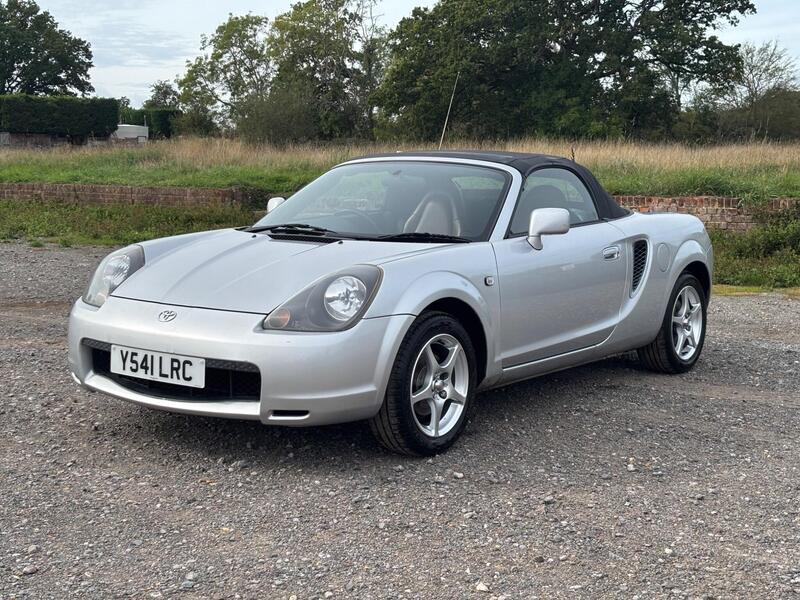
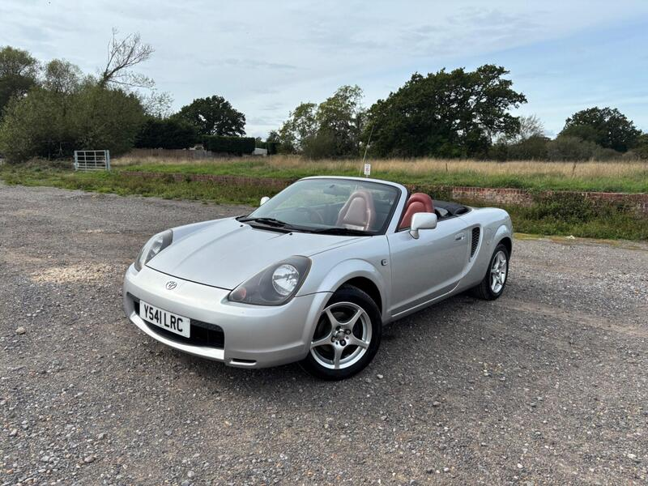
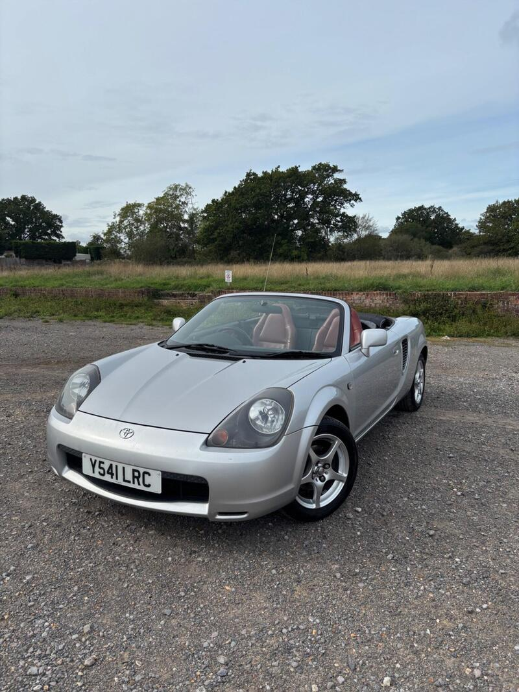
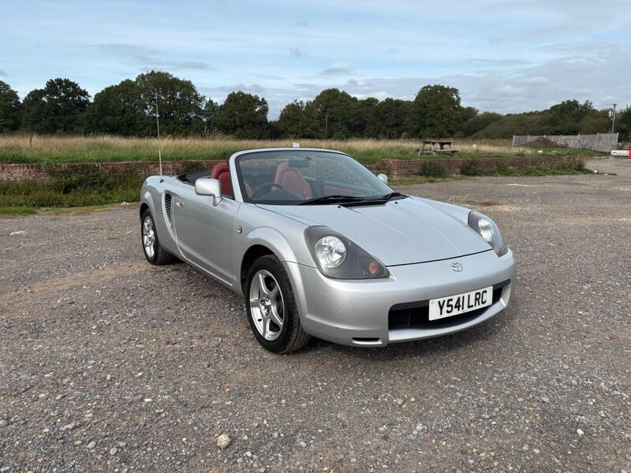

Seller photos from the AutoTrader ad.
Toyota MR2 1.8 VVT-i
Lovely spec, but get the pre-cat question answered.
Key facts
| Price | £2,300 |
|---|---|
| Year | 2001 |
| Miles | 101,000 |
| Model | Toyota MR2 1.8 VVT-i |
| Colour | Silver |
| Registration | 2001 (Y reg) |
| Owners | 10 owners |
| Service history | Not stated |
| MOT | Not stated |
| Seller | Private |
| Location | Pulborough |
| From GU7 | 19 mi (AutoTrader) |
| Checked | 13 Oct 2026 |
Why buy it
- Fresh service, no roof leaks, refurbished wheels (ad)
- Factory red leather
Things to check
2001: pre-2003 pre-cat risk. Ask for a compression test or pre-cat removal
101k miles
- Toyota MR2 Roadster weak spots
Body rot not a major concern, but the rear subframe rots. Pre-cat breakdown scores the bores (pre-2003 worst) – compression test, look for blue smoke; many have pre-cats removed.
Seller says (extract)
“This is a mechanically sound vehicle that has just had a fresh service and is 100% ready for the road. It comes in a highly desirable factory color combination, featuring the original silver paintwork paired with the original factory red leather interior and original MR2 bucket seats. The factory soft top is in great condition with absolutely no leaks. The factory alloy wheels have been fully refurbished and fitted with two brand-new rear tyres. The headlights have also been fully refurbished so they are crystal clear. Inside, the car features its rare, original dealership-fitted 6-CD shuffler. It comes with 101k genuine miles and two original keys. The reason it is priced so competitively is due to a cosmetic clear coat peel on the rear quarter panel, which I have shown honestly in the photos. I have intentionally adjusted the price downwards to allow the new owner room to respray the panel if they wish. This is a pristine runner that drives exactly as it should.…”